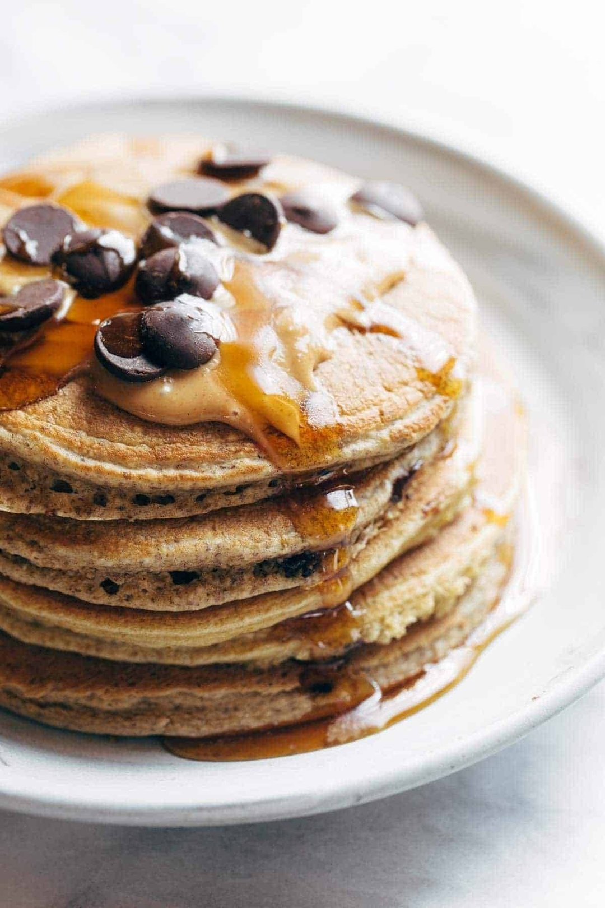

Pancakes

Description
Protein pancakes to keep you full and healthy thoughout your day
This is a short list to make it easy for people on the go
Ingredients
- 1 cup oats
- 1 banana
- 2 eggs
- 1/2 cup egg whites
- 1 teaspoon baking powder
- a pinch of salt
- a pinch of cinnamon
- 1-2 scoops protein powder
- 2 tablespoons flax meal
Steps
-
Run everything through the blender on medium low speed until very well
mixed.
-
Heat a nonstick griddle to medium high heat. Add batter in small circles
- about 1/4 cup per pancake. Sprinkle with blueberries or chocolate
chips if you want. When the edges start to look dry (2-3 minutes), flip
and cook another minute or two on the other side.
-
Top with anything you like! I like syrup and peanut butter and chocolate
chips.
Link
Link